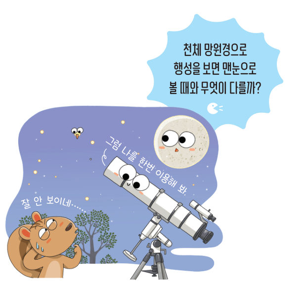
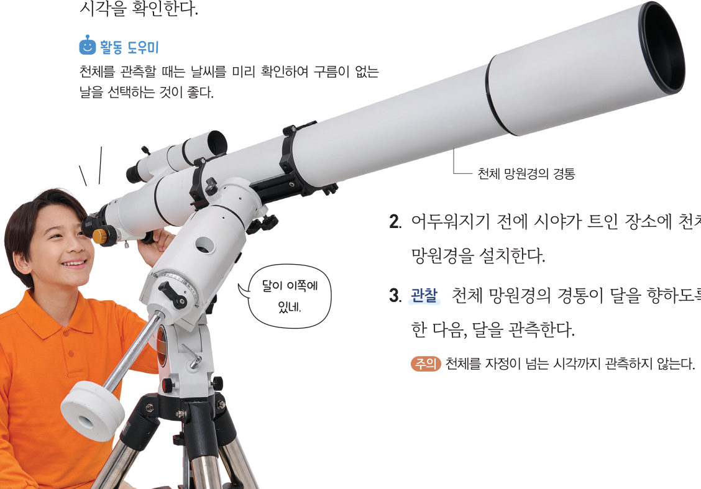
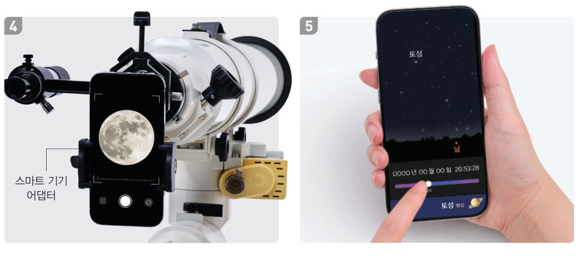

살아있는 교과서 · Ⅶ. 태양계 · 1. 태양계의 구성 · 01 225~227쪽
천체 망원경을 이용한
천체 망원경을 이용한
천체 관측
“잘 안 보이네…” “그럼 나를 한번 이용해 봐.” 천체 망원경으로 행성을 보면 맨눈으로 볼 때와 무엇이 다를까? 3D 천체 망원경의 구조를 살펴보고, 가상 접안렌즈로 달과 행성을 관측해 보자.
🎯 이 단원을 배우면 — 천체 망원경을 이용하여 천체를 관측할 수 있다.
단원 열기1. 태양계의 구성 225쪽
지구 너머로 눈부시게 밝은 태양이 보여. 우리가 밝은 낮에 다양한 활동을 할 수 있는 건 태양이 있기 때문이야.
첫 번째 블록
태양은 어떤 특징이 있는 천체일까?
‘천체 망원경을 이용한 천체 관측’(226쪽), ‘태양계를 구성하는 천체’(228쪽), ‘활동하는 태양’(232쪽)의 블록을 모으면 답할 수 있어요. 🧩
✔이 단원과 관련해 이미 알고 있는 것을 모두 골라 보자.
탐구천체 망원경을 이용하여 달, 행성 관측하기 226~227쪽
천체 망원경으로 천체를 보면 어떻게 보일까?
준비물 천체 망원경, 스마트 기기, 스마트 기기 어댑터 (부록 269·270쪽: 천체 망원경의 구조, 조립 방법과 사용법)
- 디지털 탐구 도구 활용 천체 관측 앱으로 달과 행성을 관측할 수 있는 시각을 확인한다.
- 어두워지기 전에 시야가 트인 장소에 천체 망원경을 설치한다.
- 관찰 경통이 달을 향하도록 한 다음, 달을 관측한다.
- 스마트 기기 어댑터로 스마트 기기를 접안렌즈에 고정한 다음, 달을 촬영한다.
- 관측할 행성의 위치를 천체 관측 앱으로 찾는다.
- 관찰 행성을 관측하고, 과정 4와 같은 방법으로 촬영한다.
- 관찰 촬영한 결과를 공유 플랫폼에 올리고, 친구들과 함께 관찰한다.
활동 도우미 천체를 관측할 때는 날씨를 미리 확인하여 구름이 없는 날을 선택하는 것이 좋다.
⚠️ 망원경이 넘어지지 않도록 평평한 곳에 설치하고, 삼각대에 발이 걸리거나 경통에 부딪히지 않도록 주의한다. 자정이 넘는 시각까지 관측하지 않는다.


3D 가상 실험3D 천체 망원경의 구조
아래 부품 이름을 누르면 3D 망원경에서 그 부분이 빛나고 하는 일이 나와요. 화면을 드래그하면 돌려 볼 수 있어요.
3D 굴절 망원경 · 드래그하여 돌리기부품을 골라 보세요
1각 부품이 하는 일을 골라 보자.
| 대물렌즈 | |
| 접안렌즈 | |
| 보조 망원경 | |
| 삼각대 |
가상 실험가상 접안렌즈로 관측하기
관측할 천체와 보는 방법을 골라 보자. 지구가 자전하므로 천체가 시야에서 조금씩 벗어나요. 화면을 드래그해서 경통을 움직여 천체를 가운데에 맞춰 보자. [📸 촬영]을 누르면 관측 기록에 남아요.
맨눈
2천체 망원경으로 보았을 때 처음 보인 것을 모두 골라 보자.
3정리해 볼까 달과 행성을 맨눈으로 보았을 때와 천체 망원경으로 보았을 때의 차이점을 이야기해 보자.
4천체를 관측하며 생긴 호기심이나 더 관측해 보고 싶은 천체를 이야기해 보자.
다르게 해 보기 · 스마트 기기로 달 촬영하기
① 달이 잘 보이는 날에 스마트 기기로 달을 촬영한다. ② 촬영한 결과를 공유 플랫폼을 이용하여 공유한다. 정리 관찰한 내용을 친구들과 이야기해 보자.
교과서천체 망원경 227쪽
천체 망원경은 멀리 있는 천체를 자세하게 관측하는 장치이다. 달과 행성을 천체 망원경으로 관측하면 맨눈으로 볼 때와 달리 달과 행성의 표면에 나타나는 특징도 관찰할 수 있다.
연결 천체 관측은 253 쪽과 같이 천문대나 과학 교육원에서 할 수 있다.
스스로 확인하기226쪽 학습 목표를 달성했는지 확인해 보자
1개념 확인 멀리 있는 천체를 자세하게 관측하는 장치는 ( )이다.
2사고력 달에 비해 행성은 맨눈으로 관찰하기 어려운 까닭을 설명해 보자.
3지구에서 달까지는 약 38만 km, 목성까지는 가장 가까울 때도 약 6억 km이다. 목성은 달보다 약 몇 배 멀리 있을까? 약 배
제출학생 정보 · 제출하기
모든 활동을 마친 뒤 제출하면 전체가 한 번에 채점되고 피드백이 나타나요. 답안은 선생님 스프레드시트(중1 탭)에 기록돼요.